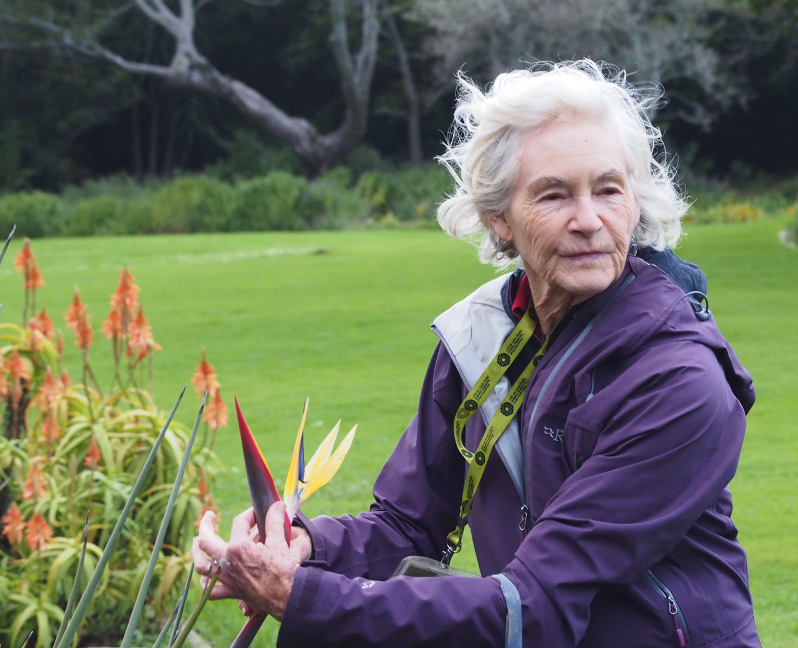
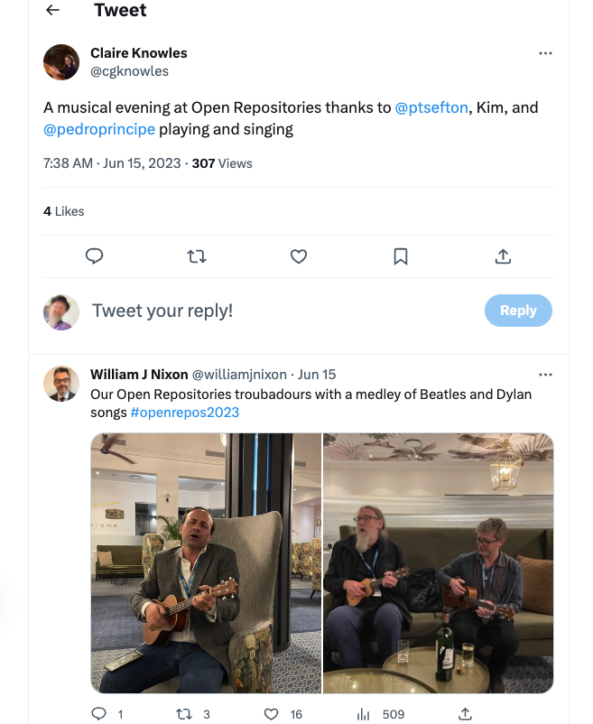
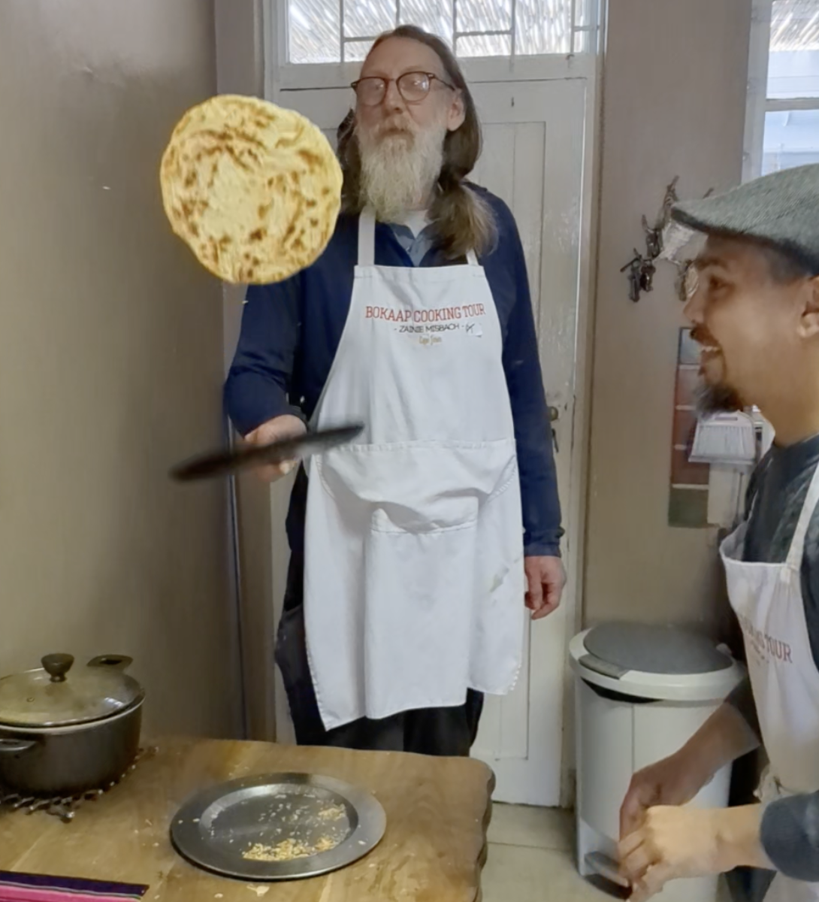

Open Repositories 2023: Trip report
2023-06-29
This is a summary of my trip to the 18th Open Repositories conference, hosted by Stellenbosch University in South Africa. My travel was paid for by my main employer, the University of Queensland. I've attended 17 of the 18 OR conferences -- including the first one which was held in Sydney, organized by the Australian Partnership for Sustainable Repositories. I think Jon Dunn from Indiana and I are now tied at 17 attendances each, not sure if there are any other contenders?

An early morning view from the conference hotel of what I think is the seaside suburb "The strand"
This conference went by really fast -- I was presenting in three sessions, on RO-Crate, A description of the Arkisto repository stack and a tech-stream talk on building an ad-hoc repository (not a live demo, but featuring screen recordings I made on the 14 hour plane ride to Johanesburg that took me 8 hours into the past), chaired a session (more on that below), fell into a jet-lag-coma in my room for one session, and by the time I'd done all that there was not a huge amount of choice left in what to attend.
what's new in repositories
I chaired a session, Updates on technology platforms, which had coverage of only two major platforms (DSpace and Islandora) or three if you count DSPace CRIS (which adds features for tracking research metrics) as a separate thing from DSpace, I heard about Dataverse, Invenio in other sessions, but didn't manage to see anything on EPrints. My general impression from this was wow - these things have gotten big and complicated, and there are a lot of features these days. Overall, architectures have matured so the software stacks now tend to have APIs, but they tend to remain fairly monolithic (just an impresson, maybe I'm wrong).
An example of what I mean by of lots of features; DSPace CRIS is a layering of a "Current Research Information System" onto the repository platform. We did the same thing with RedBox - it started as a repository platform and then after the funding organization in its wisdom had killed off the idea of it actually being a repository it became a metadata registry + data management plans + provisioning of services. What we ended up with was a very complicated system built on a repository-focussed platform that in hindsight would have been better built in a standard web application platform. It's still valuable, but last time I checked it could do with a rewrite, maybe in Salesforce? No, I'm kidding not that. I'm not sure, but I suspect DSpace CRIS may be like that - building lots of extra functionality into a core application certainly does complicate how you keep it up to date with the main-line application at any rate.
Chairing has never been my favourite part of a conference, but I kept everybody to time -- I was grinding my teeth at presenters (often with something to sell) in this and other sessions (no names) who had super-slick slides with a pretty high marketing content, including stuff like the history of their thing, laced with cute cultural references. Fine, but don't be asking the chair for more time if your presentation is half filler that seemed funny back in the office. Speaking of cultural references, did I mention that some of the 'featuritis' that makes these things expensive to deploy and manage reminded me of that time Homer put all those gadgets in his car:
Image of Homer Simpson DJing in his car for which I have not secured rights, which I found here.
{kind=link}
Highlight
The highlight of the conference for me was the the closing keynote:
Our closing keynote speaker is Prof Hussein Suleman whose research is situated within the Digital Libraries Laboratory in the Department of Computer Science at the University of Cape Town. This session promises to inspire and challenge our participants - to encourage them to think broadly about the ways repositories enable discoverability and interoperability of information and data within the structured web of data.
Prof Suleman's (home page talk, ORCiD) was indeed challenging the OR status quo: he questioned the complexity of current repositories (see above for my comments on the same), bemoaned the incursion of proprietary software into institutions, pushing aside a movement that has its roots firmly in open source. Like I mentioned above some stuff in the repositories world has drifted pretty far from the original mission of keeping stuff safe and making sure people can find and use it. Anyway regarding resourcing, Suleman said he doesn't like the the label "The Global South" and prefers to talk about low-resource environments. He noted that much of what he'd heard at the conference -- which he actually attended -- was not relevant to those working in these environments.
Suleman pointed out that while resourcing is of course about money there are several dimensions; he mentioned that in rural areas all over the world various resources are in short supply (money, people, skills, network etc), as well poor organizations such as some NGOs. All of this of course resonates with experiences of colleagues working with language data, or anything really in parts of Australia and the Pacific.
He also identified a huge resource problem, which is that archive projects are often funded for build but not maintenance (this is not just archive projects - even for rich countries like Australia we see funding for building-but-not-maintaining), which has lead Suleman and his colleagues to investigate technologies that are resilient to funding-failure.

Speaking of "low resource", not far from the conference hotel are very different accommodations than shining towers at The Strand. Someone told me there are about 500,000 people living in this part of Cape Town
Suleman works on systems such as the "Simple Archives Project" that demonstrate techniques for preserving archives in low-resource environments:
Digital library systems are not always successfully implemented and sustainable in low resource environments, such as in poor countries and in organisations without resources. As a result, some archives with important collections are short-lived while others never materialise. This paper presents a new toolkit for the creation of simple digital libraries, based on a long trajectory of research into architectural styles. It is hoped that this system and approach will lower the barrier for the creation of digital libraries and provide an alternative architecture for experiments and the exploration of new design ideas. https://pubs.cs.uct.ac.za/id/eprint/1512/
This uses CSV (the Killer app, says prof Suleman) for metadata, which is transformed into XML and then to a static website - taking this approach should guarantee that things are a little more easily sustainable than repeatedly having to migrate to the latest and greatest DSpace. (I showed our approach to this in the tech stream).
I had noted a couple of things I heard in a session on accessing research data that are relevant to Suelman's message:
-
There was a really great presentation "Rethinking the A in FAIR Data: issues of data access and accessibility in research" in the that looked at just how accessible supposedly universally accessible resources really are, by testing network access to repositories from different regions, from some countries you get to see nothing at all - here's a link to another full text paper by the same authors (I have linked to a full version of this which ).
-
In reply to a a question about impact after the presentation "Repositioning Repositories: Designing and Assessing the Life Cycle of Research Infrastructures" the presenter (I think it was Ron Dekker speaking) noted that when the UK introduced Hybrid Open Access to publishing, publishers used this as an opportunity to increase their profits -- it didn't result in better OA or lower costs as planned by the policy makers.
Reflections on the keynote in the context of our work
To me, Suleman's presentation was spot on and I agreed with his main themes, but I did have a couple of issues to discuss, relating what he said back to our work.
I don't think XML is currently the best way to represent metadata for preservation, or even as part of an ephemeral toolchain, I think it's better to use JSON-LD (but I would say that, as I'm the co-editor of a the RO-Crate spec which does just that). RO-Crate is much more friendly to 2020s programmers, is more easily extensible and is absolutely aligned with the idea of having static repositories in that it encourages the use of HTML previews for data objects so they can be understood without additional software. RO-Crate has standard tools for this and more are in the pipeline.
And if RO-Crate/JSON-LD is too complicated (and I have to admit, the latest spec is getting that way) then Frictionless Data is a JSON-only approach that is simpler to implement.
By the way, thinking about XML for metadata I was reminded of a comment made by Ron Ward at USQ many years ago when he encountered the use of XML for metadata. He remarked that in this role (and other data interchange scenarios) XML is not acting as a markup language at all. A Markup language, like HTML - THE Hypertext Markup Language, is something that adds semantic and/or formatting information to textual data which is a very different task from representing hierarchical data structures in the way JSON does. XML's Markup-focussed heritage means that it is MUCH more complicated to use even for simple metadata schemas.
One XML-based protocol that Suleman mentioned was the venerable OAI-PMH, which he was invovled in creating around the turn of this century. OAI-PMH is a way for repositories to be harvested so their resources can be centrally indexed for discovery. He made a comment that it had stood the test of time, and considered it to be one of those things that could be implemented by a competent developer in a day. I'd have to say that I think that's overly optomistic, just using existing OAI-PMH software, with all the complexities of sending differently flavoured XML over the wire used to consume a lot of developer and support time when I was involved in running a repository support service at the University of Southern Queensland. (Maybe the reason we had trouble was the implementations we used were built in a day? 🤣).
Suleman referenced current work on static repositories, with a few totally justified "what took you so long?" jibes. In particular he name-checked the Oxford Common File Layout (OCFL) (which we use in our current projects) saying that maybe it's too complicated. Maybe it is, and we've had these discussions in the LDaCA project and with people in our partner project PARADISEC, but our current thinking is that while the OCFL file structure is not exactly human friendly its other preservation features make it an OK trade off. And it's not that hard to implement. For example with Mike Lynch and Moises Sacal Bonequi at UTS we got a minimal OCFL library going in not much more than a day's work, and I believe John Ferlito at PARADISEC has had a similar experience adding S3 support this year -- it's days, not months of work to write a library that can be used for a project. (Writing a more mature, more fully featured library is a lot more work, but will benefit a lot more projects).
But as with the comment I made about RO-Crate above, if you're working in a resource-constrained environment where OCFL is considered too complicated then data can of course simply be placed in a directory/folder in a storage system a la Suleman's Simple Archives -- this is the approach that the PARADISEC team take when they take portions of the the PARADISEC repository on Raspberry PI based servers to various the Pacific Islands where people can use the repositories from their phones (or whatever devices) on hyper-local networks.
Summary & follow-up
In summary I think Suleman's talk was a really great articulation of many of the issues in repository practice; I think he made his points very powerfully, inluding a couple of comments that may have made a conference sponsor or two grimace.
In response to Suleman's challenges I'd like to propose a stream of work at next year's Open Repositories conference in Sweden.
How about we hold a pre-conference hands-on workshop that challenges repository developers to embrace some of the approaches Suleman is talking about -- storing files on disk, zero-install indices of content etc? How simple could you go to radically re-imagine a repo stack?
I'd like to see a mixture of institutional and commercial developers get involved, and to step out of their big fully-featured repository palaces and see what we can get done in a few days over the conference. We'd then have a session at the end of the conference that builds on work by Suleman and others on low-resource-ready repository and archive solutions. There might be token prizes as there are for poster presentations.
That thing where you go to a conference to meet someone from up the road
There were two people from Australian institutions at the conference. Me obviously, and the other one was Janet McDougall from the Australian Data Archive and the Australian National University. She was presenting in a session on Indigenous Knowledge Preservation
Australian Data Archive (ADA) and Australian National University (ANU) and The Dataverse Project, TKLabels use case
Janet McDougall & Steven McEachern (Australian Data Archive, Australia), Sonia Maria Barbosa (Harvard University, United
The TK and BC Labels are an initiative for Indigenous communities and local organizations. Developed through sustained partnership and testing within Indigenous communities across multiple countries, the Labels allow communities to express local and specific conditions for sharing and engaging in future research and relationships in ways that are consistent with already existing community rules, governance, and protocols for using, sharing and circulating knowledge and data. ADA has an interest in establishing the means for providing suitable representation of indigenous knowledge within the Dataverse software. This includes functionality in Dataverse to:
- link to and incorporate identified sources for indigenous knowledge representation, such as TKLabels and Notices
- curation processes for managing the creation, reading, updating, and deleting of metadata
- present curated metadata (e.g., TKLabels and TKNotices) in catalogue records
- allow external aggregators to harvest this metadata (specifically the IDN Data Catalogue, but a preferably standardized model that allows for multiple external parties to harvest)
There's a workshop next week in Brisbane for the Australian HASS and Indigenous Research Data Commons project(s) at which Janet will be presenting this work and I will be presenting the LDaCA data access and authorization model, where we look to share implementation experience between projects -- more on that soon. We're interested in how to translate labels that "express conditions" can be incorporated into environments that authorize access.
On a global scale Janet and I are near neighbours, but we only seem to get to talk in Montana, or the Kirstenbosch botanic gardens, where outgoing conference chair Claire Knowles and I accompanied Janet for a post-conference volunteer-led botanical tour.
Our super-informative volunteer guide (didn't catch her name) explaining something about a strelitzia (she said you have to understand the empire builder Cecil Rhodes as a man of his time, and after all he did give Cape Town this botanic garden)
South Africa
Here are a few pics fragments from the trip. I had a few days of personal time (in accordance with the strict UQ policy on these matters).

TigersCheetahs on a gold leash - good thing I packed the 75-300mm MFT lens for this suburban safari
Not far from the conference, ten minutes by the ubiquitous Toyota Corolla Uber, in a gated community is a Cheetah 'sanctuary' where you can pat Cheetah 'ambassadors' and gawk at few other animals through the wire. This apparently has something to do with conservation.

A little bushwalk (boschwalk?) around Kirstenbosch - clouds on Table Mountain again
Also this happened:
Kim Shepherd and I were quietly jamming on our ukes in the hotel lobby after the conference dinner when Pedro Principe turned up -- Pedro got the party started on Kim's uke and I tried to keep up. Kim did percussion on a wine bottle he'd rescued from the dinner. We were mentioned in dispatches, incoming conference chair Torsten Reimer put out a call in the closing remarks for small instruments to be brought to Gothenburg next year
Speaking of conference chairs here's me and my conference besties, Kim and outgoing chair Claire Knowles about to ascend via cable car into the Table Mountain cloud. View was OK at the bottom station and the top reminded me of home in Katoomba at 1000m above sea level on a misty day, some nice wet rocks and shrubs were on view. Also a youth group running about purposefully with a couple of cheerful leaders, possibly channeling the spirit of Baden-Powell. Anyway they were totally lost; we were thinking of following them to safety when they ran back from the direction opposite to the one in which they'd departed and asked us the way to somewhere or other.

We talked about the complexity of the current crop of repository systems, and how to use more distributed, less monolithic designs; Claire's planning something big but confidential for now (possibly with a similar design to this), and Kim's been working with a regional archive that uses quite simple underlying tech somewhat reminiscent of the approaches advocated by Suleman in his keynote (though we were yet to hear that).
Here are some penguins.

And I did a Cape Malay cooking class/tour of the Bo-Kaap neighbourhood with Zayed and family. Highly recommended.
Here I am flipping a roti